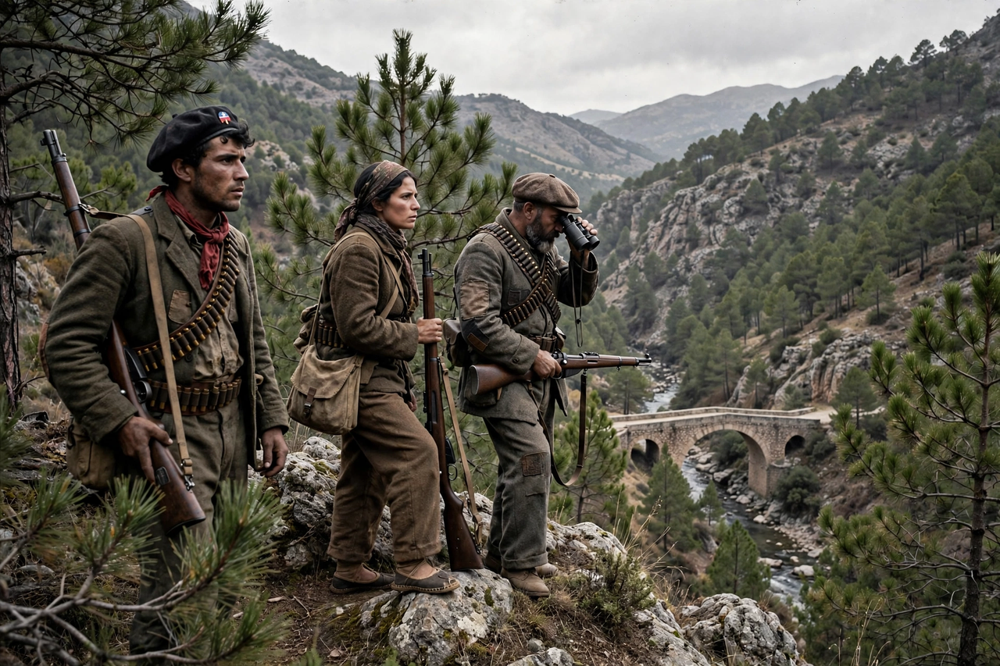

For Whom the Bell Tolls is a 1943 American war film directed by Sam Wood, adapted from Ernest Hemingway's 1940 novel of the same name. Gary Cooper stars as Robert Jordan, an American volunteer with the International Brigades during the Spanish Civil War, assigned to blow up a strategic bridge with the help of a guerrilla band; Ingrid Bergman plays Maria, the young woman he falls in love with. It was one of the highest-grossing films of 1943.
| For Whom the Bell Tolls | |
|---|---|
| Directed by | Sam Wood |
| Based on | For Whom the Bell Tolls (1940) by Ernest Hemingway |
| Starring | Gary Cooper, Ingrid Bergman, Akim Tamiroff, Katina Paxinou |
| Release date | 1943 |
| Studio | Paramount Pictures |
Jordan joins the mountain guerrillas of Pablo and his formidable wife Pilar to prepare the demolition of a bridge timed to coincide with a Republican offensive. Betrayal and fascist patrols close in; Jordan, wounded in the final retreat after the bridge is destroyed, stays behind with a machine gun to cover the others' escape, bidding Maria farewell in the film's most famous scene.
The film received nine Academy Award nominations; Katina Paxinou won Best Supporting Actress for her portrayal of Pilar. Its politics were softened relative to the novel — Paramount avoided explicit attacks on Franco's regime while the Second World War raged — a point of contemporary controversy.
See also: Spanish Civil War · Ingrid Bergman